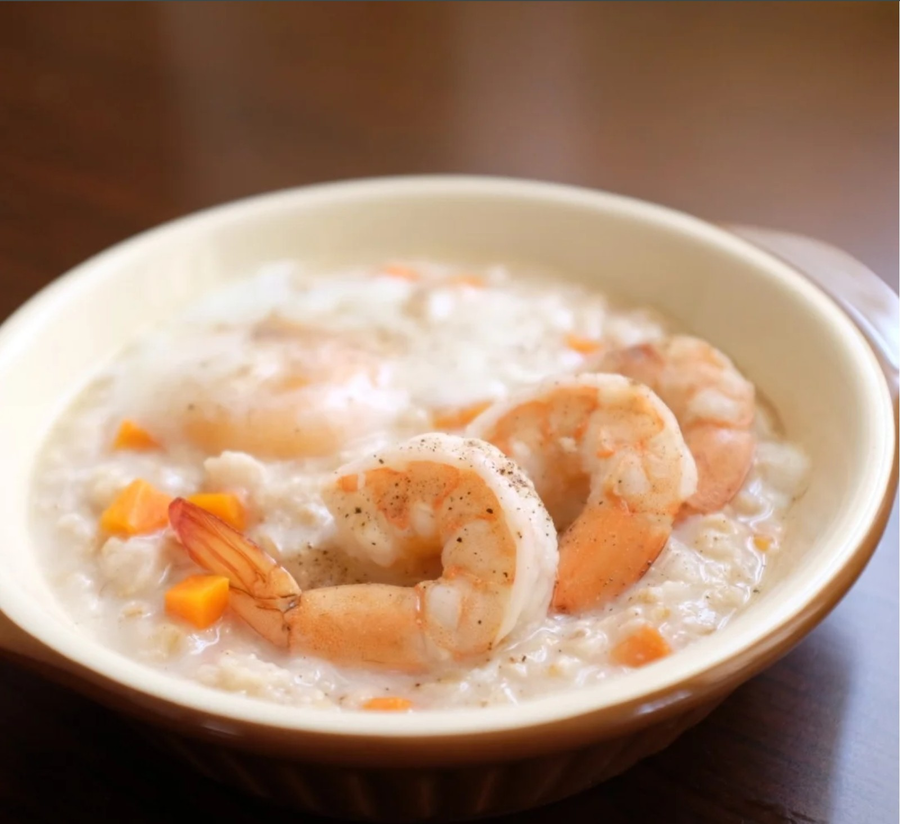

วัตถุดิบโจ๊กข้าวโอ๊ต
ข้าวโอ๊ต 20 กรัม
น้ำเปล่า 2 ถ้วย
ไข่ขาวพาสเจอร์ไรซ์ 100 มล
บร็อคโคลีตามชอบ
กุ้งสับตามชอบ
เกลือป่นเล็กน้อย
สาหร่ายแห้งตามชอบ
วิธีทำโจ๊กข้าวโอ๊ต
-นำข้าวโอ๊ต และสาหร่ายแห้ง ลงไปต้มกับน้ำร้อนจนเดือด พอข้าวโอ๊ตเดือด เติมไข่ขาวลงไปแล้วคนเรื่อย ๆ จนเนื้อโจ๊กข้นขึ้น
-เคี่ยวจนเดือด เนื้อโจ๊กสีขาวและข้นขึ้น จากนั้นเติมกุ้งสับ และบร็อคโคลี ต้มต่อไปซักพักจนบรอคคอลี่เข้ากับเนื้อโจ๊กก็ปิดไฟ

ประโยชน์
โจ๊กข้าวโอ๊ตมีประโยชน์ต่อสุขภาพมากมาย เช่น
ช่วยลดคอเลสเตอรอล ควบคุมระดับน้ำตาลในเลือด
ช่วยให้อิ่มนาน และมีสารต้านอนุมูลอิสระ
นอกจากนี้ยังเป็นแหล่งพลังงานที่ดี มีวิตามินและแร่ธาตุที่จำเป็นต่อร่างกาย
ข้อควรระวัง
-สำหรับผู้ที่มีอาการแพ้กลูเตน ควรเลือกข้าวโอ๊ตชนิดที่ปราศจากกลูเตน
-ควรบริโภคข้าวโอ๊ตในปริมาณที่เหมาะสม เพื่อให้ได้รับประโยชน์สูงสุด
หากมีข้อสงสัยหรือข้อกังวลเกี่ยวกับการบริโภคข้าวโอ๊ต ควรปรึกษาแพทย์หรือผู้เชี่ยวชาญด้านโภชนาการ